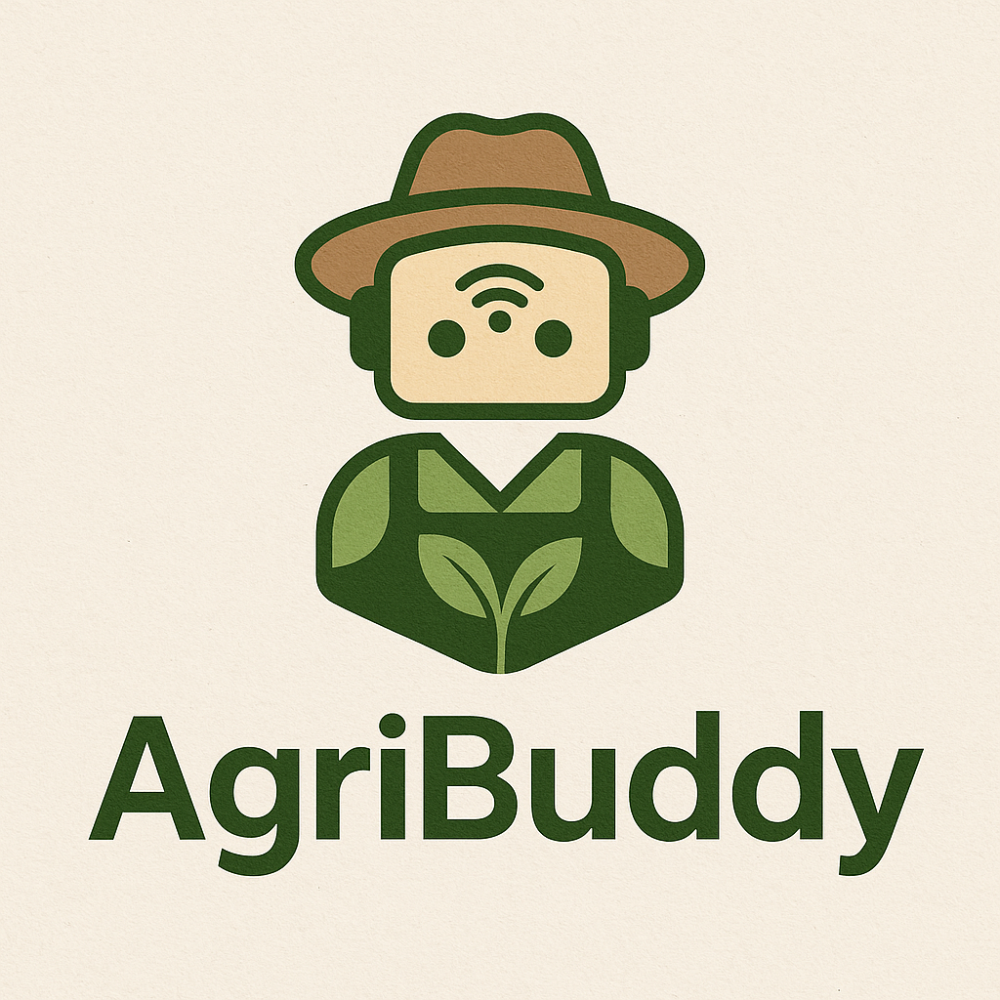
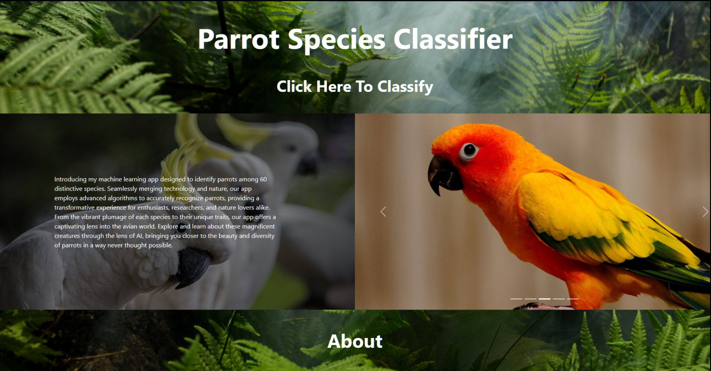

Projects
AI projects aren't built on code alone, but on curiosity, patience, and a thousand tiny experiments.
Machine Learning, NLP & Computer Vision



2024
Automatic Bengali Transcription System
Robust Bangla ASR system using Whisper; deployment targets a web interface generating CSV/Excel outputs from audio inputs.




Data Science & Analytics


2024
Titanic EDA and Survival Prediction
Exploratory data analysis of Titanic passenger data; survival prediction using multiple ML algorithms (age, class, gender).

%20sub-region%20(Map).png)
Open-Source Tools & Web Development